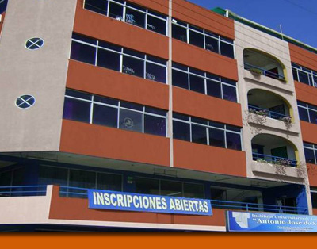

Nuestra Institución
|  |
La creación del Instituto Universitario de Tecnología “Antonio José de Sucre” fue aprobada por el Consejo Nacional de Universidades, según Decreto Presidencial Nº 923 de 04 de abril de 1972, publicado en Gaceta Oficial Nº 29.772 de 05-04-72, determinándose que su Sede estaría ubicada en Caracas, Distrito Federal, quedando la Institución autorizada por ofrecer carreras cortas en el área de Tecnología de la Construcción Civil, Turismo, mención Hotelería y mención Servicios Turísticos; Diseño Industrial; Administración y Ciencias Comerciales, Diseño de Obras Civiles. |
La Institución quedó facultada para otorgar a sus egresados el Título de Técnico Superior Universitario en sus respectivas especialidades.
Posteriormente, desde el año 1979, esta Casa de Estudios amplía su oferta académica y recibe la autorización ministerial de crear diversas regiones del país, Extensiones que fueron coadyuvando al crecimiento de sus zonas de influencia como fueron: Maracaibo y Maracay bajo la Resolución Nº 84.
A partir de 1983, se crean las siguientes extensiones como se indica a continuación:
1.- Barquisimeto (Resolución Nº 64).
2.- Mérida (Resolución Nº 354 año 1984).
3.- Guayana Puerto Ordaz (Resolución Nº 285, año 1988).
4.- Valencia (Resolución Nº 934 año 1988).
5.- Barinas (Resolución Nº 1019, Año 1991).
6.- San Cristóbal (Resolución Nº 800, año 1992).
7.- Punto Fijo (Resolución Nº 950, año 1993).
8.- Porlamar (Resolución Nº 1139, año 1993).
9.- Aragua de Barcelona, Ampliación de la Extensión Barcelona (Resolución Nº 383, año 1993).
10.- Guarenas, Ampliación de la Sede de Caracas (Resolución Nº 0375, año 1994).
11.- Yaracuy (Resolución Nº 934, año 1988).
12.- Anaco, Ampliación de la Extensión Barcelona (Resolución Nº 000232, año 2000).
13.- Charallave, Ampliación de la Sede Caracas (Oficio N° 000611, año 2002).
14.- Socopó, Ampliación de Barinas (Oficio N° 000609, año 2002)
15.- Ciudad Bolívar, Ampliación de Puerto Ordaz (Resolución 006299, año 2007).
16.- Barcelona (Resolución 33018- 1984)
Actualmente disponemos de 19 Instituciones a nivel Nacional con instalaciones adecuadas a las nomras para el desenvolvimiento de las actividades académicas universitarias.